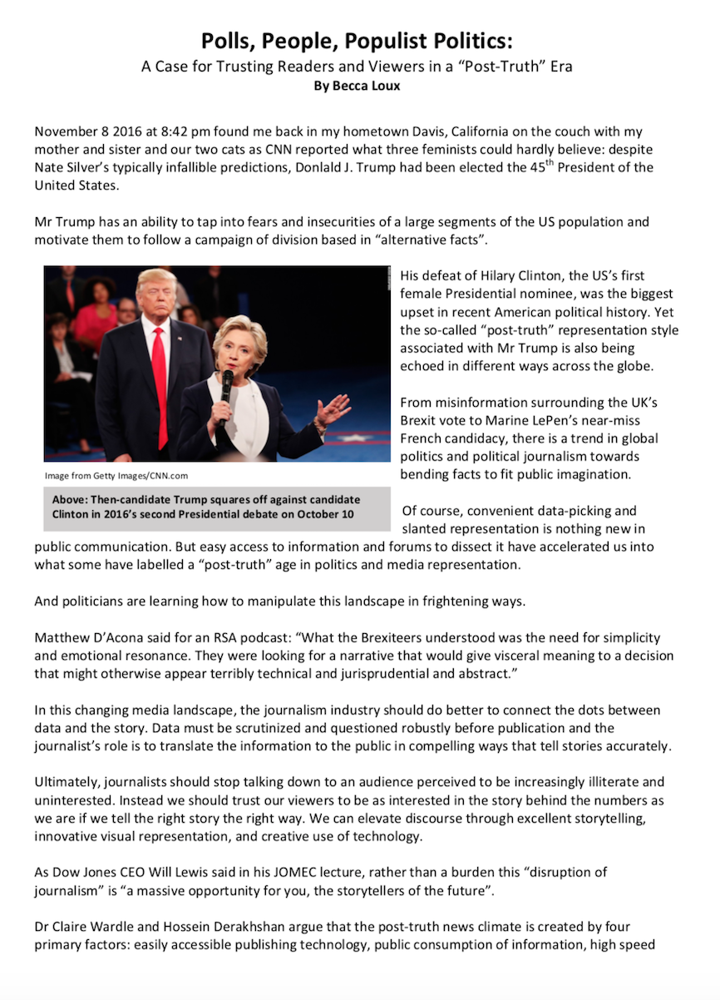
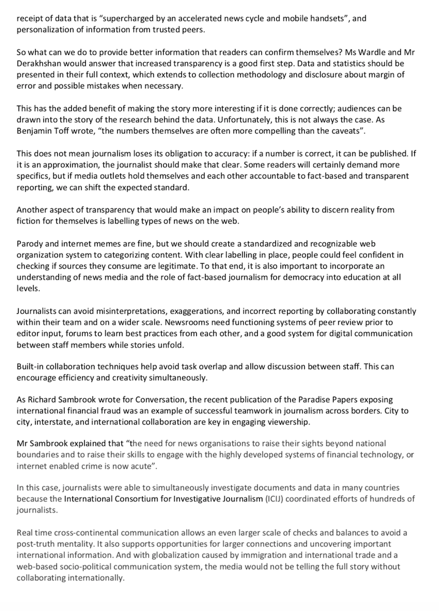
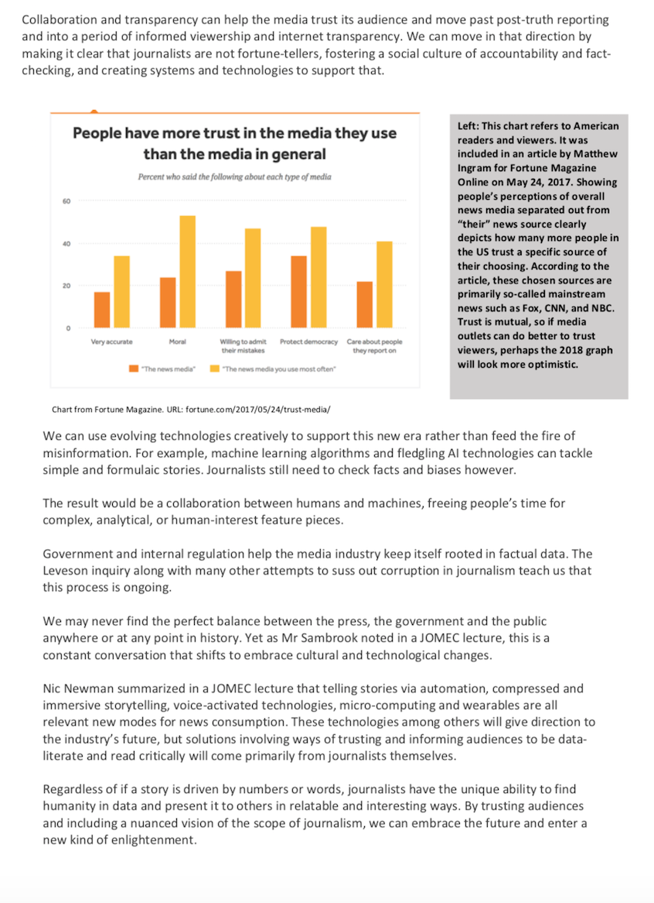

I wrote this story for a class for my MSc in Computational and Data Journalism entitled "Reporters and the Reported" at Cardiff University which was taught by Professor Richard Sambrook and consisted mostly of guest lectures covering key journalistic concepts. When I refer to "JOMEC" lectures I am talking about lectures for this class, sponsored by and part of Cardiff University's Journalism, Media and Cultural Studies (JOMEC) Program.


